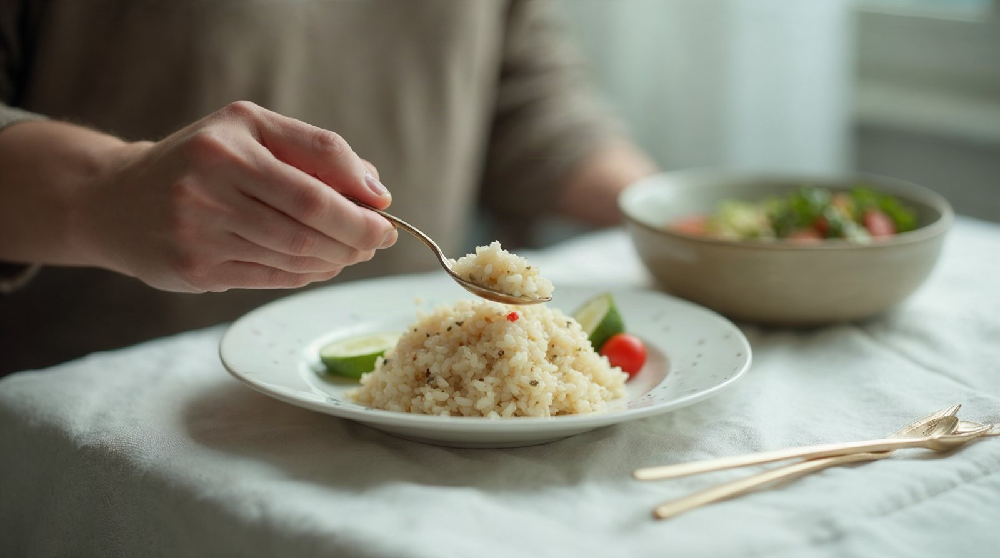
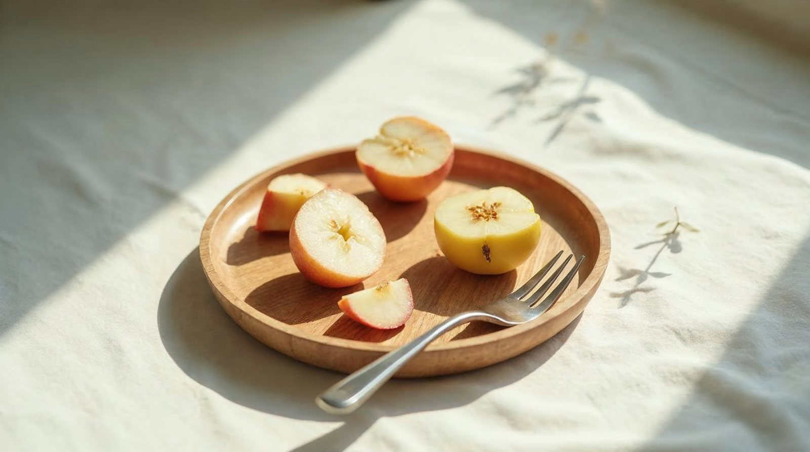

이종호 한의사 감수좋은꿈참사랑한의원 대표원장 (한의사 면허번호 19769)발행 2026-11-23 · 수정 2026-11-26
이 글의 차례
- 왜 이런 불편이 생길 수 있나요
- 왜 아이마다 먹는 양이 이렇게 다를까요?
- 단순한 입 짧음과 살펴볼 상황은 어떻게 다를까요?
- 먼저 이렇게 여쭙니다
- 스스로 점검해 보세요
- 상황별 예시
- 일상에서 먼저 해 볼 수 있는 것
- 하루 먹는 흐름은 어떻게 짤까요?
- 식탁 분위기는 어떻게 만들까요?
- 음식은 어떻게 내면 좋을까요?
- 낮 활동과 잠도 입맛과 이어질까요?
- 돌보는 어른이 여럿일 때는 어떻게 맞출까요?
- 아프거나 컨디션이 나쁠 때는 어떻게 할까요?
- 보호자의 마음은 어떻게 다독일까요?
- 자주 하는 오해는 무엇인가요?
- 한의학에서는 입 짧은 아이를 어떻게 바라보나요?
- 한의원에서 함께 살필 수 있는 경우
- 첫 진료는 어떤 순서로 진행되나요?
- 다시 오셨을 때는 무엇을 비교하나요?
- 얼마나 지켜보고 언제 상담할까요
- 이렇게 기록해 오시면 상담이 쉬워집니다
- 이런 증상은 먼저 확인이 필요합니다
아이가 밥을 몇 숟가락 먹고 거부할 때는 식사 전 간식이나 우유로 이미 배가 찬 경우, 식사 분위기, 활동량, 잠과 변 상태가 함께 영향을 주는 경우가 많아, 하루 먹는 흐름 전체와 성장 곡선을 함께 살핍니다. 끼니마다 실랑이를 하다 보면 아이가 덜 자라는 건 아닌지 걱정도 함께 커집니다.
숟가락을 들고 아이를 따라다니고, 좋아하는 영상을 틀어 주며 한 입이라도 더 넣어 보려 애쓰다 보면 식사 시간이 한 시간을 훌쩍 넘기기도 합니다. 그렇게 애를 써도 몇 숟가락에서 멈추면 보호자의 마음이 먼저 지칩니다.
저는 이런 고민으로 오신 보호자께 "오늘 아이가 무엇을 먹었는지"보다 "하루가 어떻게 흘러갔는지"를 먼저 여쭙니다. 밥상 위의 몇 숟가락은 그날 아이가 언제 일어나 무엇을 하고, 언제 무엇을 먹었는지가 모인 결과인 경우가 많기 때문입니다.
왜 이런 불편이 생길 수 있나요
- 식사 전 간식이나 우유, 주스로 배가 차 있으면 밥을 적게 먹을 수 있습니다.
- 영상을 보며 먹거나 식사 시간이 길어지면 먹는 데 집중하기 어렵습니다.
- 변비가 있거나 활동량이 적은 날에는 입맛이 떨어지기도 합니다.
- 한의학에서는 아이의 소화와 잠, 쉽게 지치는 경향을 함께 살핍니다.
- 식사 때 꾸중이나 재촉이 잦으면 식탁 자체를 피하고 싶어 하는 아이도 있습니다.
왜 아이마다 먹는 양이 이렇게 다를까요?
아이들은 어른보다 위가 작고, 하루 중 배고픔의 오르내림도 큽니다. 한 끼를 아주 잘 먹고 다음 끼니는 거의 안 먹는 모습이 흔하고, 하루 단위로 보면 생각보다 고르게 먹고 있는 경우도 적지 않습니다.
또 두세 살 무렵부터는 낯선 음식을 경계하고 익숙한 것만 먹으려는 시기가 찾아오기도 합니다. 처음 보는 반찬을 거부하는 것은 이 시기 아이들에게 드문 일이 아니라, 여러 번 보고 냄새를 맡고 만져 본 뒤에야 한 입 먹어 보는 경우가 많습니다.
타고난 기질도 있습니다. 원래 먹는 것에 관심이 적고 노는 데 더 마음이 가는 아이가 있고, 몸집이 작게 태어나 꾸준히 작은 곡선을 따라 자라는 아이도 있습니다. 그래서 먹는 양만 보지 않고 성장 곡선의 흐름을 함께 봅니다.
단순한 입 짧음과 살펴볼 상황은 어떻게 다를까요?
- 먹는 양은 적어도 잘 놀고, 잘 자고, 성장 곡선을 꾸준히 따라간다면 아이의 리듬일 가능성이 큽니다.
- 특정 음식만 먹고 다른 음식은 거의 입에 대지 않는 일이 오래가면, 영양이 한쪽으로 치우치지 않는지 함께 살펴봅니다.
- 식사 때마다 배가 아프다고 하거나 변을 며칠씩 못 본다면, 변비가 입맛을 떨어뜨리고 있는지 함께 봅니다.
- 삼킬 때 자주 사레가 들리거나 씹는 것을 유난히 힘들어한다면 소아청소년과에서 씹고 삼키는 과정을 한 번 확인해 보는 것이 좋습니다.

먼저 이렇게 여쭙니다
- 간식은 하루에 몇 번, 언제 먹나요?
- 식사 시간에 영상이나 장난감을 보나요?
- 변은 며칠에 한 번, 어떤 모양인가요?
- 밤에 몇 시에 자고, 잘 자나요?
- 좋아하는 음식과 싫어하는 음식이 뚜렷한가요?
스스로 점검해 보세요
- 식사 전 1시간 안에 우유, 주스, 과자를 먹는 날이 많나요?
- 한 끼 식사에 40분 넘게 걸리는 날이 잦나요?
- 영상을 틀어 주어야 밥을 먹나요?
- 아이를 따라다니며 떠먹이는 일이 많나요?
- 변을 사흘 넘게 못 보거나 딱딱한 변을 보는 일이 있나요?
- 밤 10시가 넘어 잠드는 날이 일주일에 사흘 이상인가요?
- 낮에 뛰어놀며 땀을 흘리는 시간이 하루 한 시간도 안 되나요?
해당하는 항목이 있다면 간식 시간과 식사 분위기, 잠과 활동량부터 하나씩 바꿔 보세요.
상황별 예시
- 예를 들어 어린이집에서 오후 간식을 먹고 하원한 뒤 집에 와서도 우유와 과자를 먹는 경우라면, 하원 뒤 간식은 과일 조금으로 줄이고 저녁 식사 시간을 30분 늦춰 본 뒤 먹는 양을 비교해 봅니다.
- 예를 들어 영상을 틀어 주어야 겨우 앉아서 먹는 아이라면, 하루에 한 끼만이라도 영상을 끄고 가족이 함께 앉아 먹는 시간으로 정해 봅니다.
- 예를 들어 주말에는 잘 먹는데 평일 저녁만 유난히 안 먹는다면, 평일 낮의 활동량과 하원 시간, 낮잠 시각이 주말과 어떻게 다른지 함께 적어 봅니다.
- 예를 들어 채소만 보면 고개를 돌리는 아이라면, 장보기에서 채소를 직접 고르게 하거나 씻는 일을 맡겨 보고, 식탁에는 아주 조금씩 꾸준히 올려 봅니다.
- 예를 들어 변을 며칠씩 못 보고 배가 빵빵한 날 밥을 거의 안 먹는다면, 변 보는 날과 먹는 양을 함께 적어 두 흐름이 맞물리는지 봅니다.

일상에서 먼저 해 볼 수 있는 것
- 식사 1~2시간 전에는 간식과 우유 줄이기
- 식사 시간을 20~30분 정도로 정하고 지나면 치우기
- 아이가 직접 고르거나 함께 만드는 음식 하나 넣기
- 영유아 검진 때 받은 성장 기록 챙겨 두기
- 새로운 음식은 좋아하는 음식 옆에 조금씩 함께 내기
하루 먹는 흐름은 어떻게 짤까요?
아이의 하루를 세 끼와 두 번의 간식으로 나눠, 끼니 사이 간격을 대략 2~3시간 정도로 맞춰 보세요. 간식은 정해진 시간에 정해진 양만 주고, 끼니 직전에는 주지 않는 것이 기본입니다. 과일, 고구마, 삶은 달걀처럼 끼니를 보태는 간식을 고르면 좋습니다.
물 대신 우유나 주스를 자주 마시면 배가 쉽게 차서 밥이 들어갈 자리가 줄어듭니다. 목이 마를 때는 물을 주고, 우유는 하루에 마실 양을 정해 간식 시간에 주세요. 이렇게 흐름이 잡히면 식사 시간에 배가 고픈 상태로 앉게 됩니다.
식탁 분위기는 어떻게 만들까요?
식사 시간에는 텔레비전과 휴대폰을 끄고, 가족이 함께 같은 자리에 앉아 먹는 모습을 보여 주세요. 아이는 어른이 즐겁게 먹는 모습을 보며 따라 하는 경우가 많습니다.
"한 입만 더", "다 먹어야 일어날 수 있어" 같은 말은 식사를 숙제처럼 느끼게 할 수 있습니다. 먹은 양보다 앉아서 함께 먹은 것, 새로운 음식을 한 번 만져 본 것을 칭찬해 주세요. 정해진 시간이 지나면 남긴 것을 조용히 치우고, 다음 간식이나 식사 시간까지는 따로 먹을 것을 주지 않는 쪽으로 일관되게 지켜 주세요. 물은 언제든 마셔도 괜찮습니다.
음식은 어떻게 내면 좋을까요?
아이 그릇에는 다 먹을 수 있을 만큼 적게 담아 주세요. 많이 담긴 그릇은 보기만 해도 부담이 되고, 조금 담아 다 먹은 뒤 더 달라고 하는 경험이 아이에게는 더 즐겁습니다.
새로운 음식은 한 번에 한 가지씩, 아이가 좋아하는 음식 옆에 아주 조금만 올려 주세요. 처음에는 먹지 않아도 괜찮습니다. 여러 번 식탁에서 보고 익숙해지면 어느 날 한 입 먹어 보는 경우가 많습니다. 모양을 바꾸거나 아이가 직접 담게 하는 것도 관심을 끄는 방법입니다.
낮 활동과 잠도 입맛과 이어질까요?
낮에 충분히 뛰어놀고 땀을 흘린 날은 저녁 밥상 앞에서 배고픔을 느끼기 쉽습니다. 집 안에서만 지내는 날이 많다면 놀이터나 공원에서 한 시간이라도 몸을 움직이는 시간을 만들어 주세요.
잠도 중요합니다. 밤늦게 잠들어 아침에 겨우 일어난 아이는 아침 입맛이 없고, 그 흐름이 하루 종일 이어지기도 합니다. 잠드는 시각과 일어나는 시각을 일정하게 지키면 끼니 시간에 맞춰 배고픔도 조금씩 자리를 잡습니다.
돌보는 어른이 여럿일 때는 어떻게 맞출까요?
평일에는 조부모님이, 저녁과 주말에는 부모가 아이를 돌보는 집이라면 간식 시간과 식사 규칙이 서로 다른 경우가 많습니다. 한쪽에서는 간식을 자주 주고 다른 쪽에서는 끼니를 강조하면, 아이는 어느 쪽에 맞춰야 할지 헷갈려 합니다.
간식 시간과 종류, 식사 시간과 영상 규칙 정도는 돌보는 어른들이 함께 정해 냉장고에 붙여 두세요. 완벽하게 같지 않아도 큰 틀이 비슷하면 아이의 하루 먹는 흐름이 훨씬 안정됩니다. 어린이집 선생님께 낮 동안 먹는 양과 간식 시간을 여쭤 함께 맞추는 것도 도움이 됩니다.
아프거나 컨디션이 나쁠 때는 어떻게 할까요?
감기에 걸리거나 이가 날 때, 예방접종을 맞은 뒤에는 아이가 평소보다 적게 먹는 것이 흔합니다. 이런 때는 양을 늘리려 애쓰기보다 물을 자주 주고, 죽이나 국처럼 부드럽고 먹기 쉬운 음식을 조금씩 내주세요.
몸이 회복되면 입맛도 대개 돌아오니, 아픈 동안 생긴 간식 습관이 이어지지 않게만 신경 써 주세요. 아픈 날은 기록에 따로 표시해 두면 나중에 흐름을 볼 때 헷갈리지 않습니다.
보호자의 마음은 어떻게 다독일까요?
끼니마다 먹는 양을 세다 보면 보호자도 모르게 표정과 목소리에 걱정이 묻어나고, 아이는 그 긴장을 그대로 느낍니다. 하루 한 끼쯤은 양을 세지 않고 함께 먹는 데만 집중해 보세요.
아이가 덜 먹은 날이 있어도 보호자의 잘못이 아닙니다. 하루가 아니라 일주일, 한 달 단위로 바라보면 마음이 조금 가벼워지고, 그 여유가 식탁 분위기도 바꿉니다.
자주 하는 오해는 무엇인가요?
- 많이 먹어야 잘 큰다는 생각: 아이마다 필요한 양이 다르고, 성장 곡선을 꾸준히 따라간다면 적게 먹는 것만으로 걱정하지 않아도 되는 경우가 많습니다.
- 영상을 보여 주면 더 먹으니 괜찮다는 생각: 당장은 몇 숟가락 더 들어가도, 배고픔과 배부름을 스스로 느끼는 힘을 기르기 어려울 수 있습니다.
- 싫어하는 음식은 다시 내지 말아야 한다는 생각: 몇 번 거부했다고 포기하기보다, 부담 없이 조금씩 꾸준히 보여 주는 것이 도움이 됩니다.
- 밥 대신 좋아하는 것이라도 먹이면 된다는 생각: 끼니를 거른 뒤 과자나 빵으로 채워 주면 다음 끼니 배고픔이 줄어 같은 흐름이 반복되기 쉽습니다.
- 입 짧은 것은 커 가면서 저절로 해결된다는 생각: 나이가 들며 나아지는 아이도 있지만, 식탁에서의 습관은 일찍부터 함께 잡아 주는 것이 아이에게 편합니다.
한의학에서는 입 짧은 아이를 어떻게 바라보나요?
한의학에서는 아이의 소화하는 힘을 자라는 바탕으로 보고, 입이 짧고 쉽게 지치는 아이는 소화의 힘이 약한 경향과 연결해 살피는 경우가 있습니다. 그래서 먹는 양만 보지 않고 배가 자주 아픈지, 변은 어떤지, 손발이 찬지, 잠을 깊이 자는지를 함께 여쭙니다.
대표원장은 잘 먹고, 잘 싸고, 잘 자고, 마음 편하고, 몸 따뜻하게, 이 다섯 가지를 몸이 회복하는 바탕으로 봅니다. 아이에게도 이 바탕은 똑같이 중요해서, 밥상 문제로 오신 보호자께도 잠과 변, 식탁 분위기를 빠짐없이 여쭙니다.
한의원에서 함께 살필 수 있는 경우
- 입이 짧고 식사량이 적은 아이의 경우 소화, 변, 잠을 함께 살핍니다.
- 배가 자주 아프다고 하거나 쉽게 지치는 경우 몸의 경향을 함께 살핍니다.
- 가져오신 성장 기록으로 키와 몸무게의 흐름을 함께 살핍니다.
좋은꿈참사랑한의원에서는 보호자와 아이의 이야기를 모두 듣고, 아이가 겁먹지 않도록 무엇을 왜 하는지 먼저 설명합니다. 진맥을 기본으로 하고 필요하다고 판단될 때 복진 같은 방법을 더해 아이의 몸 상태를 살핀 뒤, 아이의 나이와 상태에 맞는 방법을 보호자와 함께 정합니다.
소아청소년과에서 받은 약이나 먹이고 있는 영양제가 있다면 이름을 알려 주세요. 처방받은 약은 처방한 의사와 상의 없이 줄이거나 끊지 마시고, 한약 상담도 지금 먹는 약을 확인한 뒤에 진행합니다.
첫 진료는 어떤 순서로 진행되나요?
- 모든 아이의 맥을 먼저 짚고, 입이 짧아진 시기와 하루 먹는 흐름을 보호자께 듣습니다.
- 간식과 우유 시간, 식사 분위기, 영상 시청, 낮 활동량을 여쭙니다.
- 변 보는 간격과 모양, 잠든 시각과 깨는 횟수, 배가 아프다고 하는 때를 확인합니다.
- 가져오신 성장 기록을 함께 본 뒤 아이에게 맞는 방법을 정하고, 다음 진료까지 바꿔 볼 것과 기록할 것을 보호자와 함께 정합니다.
다시 오셨을 때는 무엇을 비교하나요?
두 번째 진료부터는 다시 맥을 짚고, 그사이 적어 오신 식사 기록을 함께 봅니다. 간식 시간을 바꾼 뒤 끼니 양이 어땠는지, 영상을 끈 식사에서는 어땠는지, 변과 잠은 어떻게 달라졌는지를 나눠 여쭙니다.
집에서 지키기 쉬웠던 것과 어려웠던 것을 보호자께 듣고, 아이의 하루 일정에 맞게 다음 몇 주 동안 이어 갈 것을 다시 정합니다. 성장 기록이 새로 생겼다면 지난번 기록과 이어서 함께 봅니다.
얼마나 지켜보고 언제 상담할까요
간식 시간과 식사 분위기를 바꾼 뒤 3~4주 정도는 끼니 양을 적어 보세요. 하루하루 먹는 양은 들쭉날쭉해도, 일주일 단위로 모아 보면 흐름이 보입니다. 그래도 끼니마다 실랑이가 이어져 보호자와 아이 모두 지치거나, 변비와 잦은 배앓이가 함께 있다면 상담을 받아 보시기를 권합니다.

이렇게 기록해 오시면 상담이 쉬워집니다
- 사흘 정도의 식사와 간식 시간, 먹은 양
- 변 보는 간격과 모양
- 잠든 시간과 일어난 시간
- 영유아 건강검진 결과나 성장 기록
먹은 양은 '숟가락 수'나 '그릇의 반·다' 정도로만 적어도 충분합니다. 매 끼니 사진을 한 장씩 찍어 두는 것도 기록을 쉽게 하는 방법입니다. 먹기 전과 먹은 뒤 그릇을 함께 찍어 두면 실제로 먹은 양이 한눈에 보이고, 간식은 시각과 종류만 짧게 덧붙이면 됩니다.
밥상 앞의 실랑이가 조금씩 줄고 식사 시간이 아이와 보호자 모두에게 편해지도록, 오시면 아이의 하루부터 함께 짚어 보겠습니다.
이런 증상은 먼저 확인이 필요합니다
- 몸무게가 줄거나 성장 곡선에서 크게 벗어나는 경우(소아청소년과 진료)
- 반복해서 토하거나 배가 심하게 아픈 경우
이런 신호가 있으면 한의원보다 가까운 병원이나 응급실을 먼저 찾으세요.

여쭙는 것
- 간식은 하루에 몇 번, 언제 먹나요?
- 식사 시간에 영상이나 장난감을 보나요?
- 변은 며칠에 한 번, 어떤 모양인가요?
생활에서 해 볼 것
- 식사 1~2시간 전에는 간식과 우유 줄이기
- 식사 시간을 20~30분 정도로 정하고 지나면 치우기
- 아이가 직접 고르거나 함께 만드는 음식 하나 넣기
한의원에서 함께 살필 것
- 입이 짧고 식사량이 적은 아이의 경우 소화, 변, 잠을 함께 살핍니다.
- 배가 자주 아프다고 하거나 쉽게 지치는 경우 몸의 경향을 함께 살핍니다.
- 가져오신 성장 기록으로 키와 몸무게의 흐름을 함께 살핍니다.
먼저 확인이 필요한 신호
- 몸무게가 줄거나 성장 곡선에서 크게 벗어나는 경우(소아청소년과 진료)
- 반복해서 토하거나 배가 심하게 아픈 경우
한눈에 보는 표
| 구분 | 핵심 |
|---|---|
| 여쭙는 것 | 간식은 하루에 몇 번, 언제 먹나요? 식사 시간에 영상이나 장난감을 보나요? |
| 생활에서 해 볼 것 | 식사 1~2시간 전에는 간식과 우유 줄이기 식사 시간을 20~30분 정도로 정하고 지나면 치우기 |
| 한의원에서 함께 살필 것 | 입이 짧고 식사량이 적은 아이의 경우 소화, 변, 잠을 함께 살핍니다. 배가 자주 아프다고 하거나 쉽게 지치는 경우 몸의 경향을 함께 살핍니다. |
| 먼저 확인이 필요한 신호 | 몸무게가 줄거나 성장 곡선에서 크게 벗어나는 경우(소아청소년과 진료) 반복해서 토하거나 배가 심하게 아픈 경우 |
자주 묻는 질문
억지로라도 먹여야 하나요?
억지로 먹이면 식사가 싫어질 수 있습니다. 정해진 시간에 식사를 내고 아이가 스스로 먹게 기다리는 것을 권합니다.
성장 기록은 어디서 보나요?
영유아 건강검진 결과나 모자수첩 기록을 가져오시면 함께 봅니다.
어린이집 끝나고 저녁에 가도 되나요?
평일은 저녁 8시까지 진료합니다(점심 13:00~14:00). 아이와 함께라면 방문 전 전화로 대기 상황을 확인해 주세요.
영양제를 먹이면 밥을 더 먹나요?
영양제만으로 입맛이 바뀌기는 어렵습니다. 먹이고 있는 영양제가 있다면 알려 주시면 함께 확인합니다.
간식을 아예 끊어야 하나요?
끊기보다 시간과 양을 정해 주는 것을 권합니다. 끼니 사이 정해진 간식은 아이에게 필요한 에너지가 되고, 식사 직전만 피하면 끼니에 큰 방해가 되지 않습니다.
좋은꿈참사랑한의원은 재진 때 지난번 이야기부터 이어서 여쭙니다. 진료시간과 예약은 오시는 길에서 확인하세요.
어디서 상담받을 수 있나요?
좋은꿈참사랑한의원은 서울 동작구 만양로2길 2 신성빌딩 3층·5층(서울 동작구 상도동, 7호선 상도역 3번 출구 근처)에 있습니다. 한의사 3명(이종호 대표원장, 조영기 수석진료원장, 정원영 진료원장)이 진료합니다. 진료시간은 평일 09:30~20:00(점심 13:00~14:00), 토·일·공휴일 09:30~15:00이며, 방문 전 전화로 확인을 권합니다. 예약은 네이버 예약, 카카오톡 상담, 전화 02-815-7510로 받습니다.
이 글은 일반적인 건강 정보이며 개인의 진단이나 치료를 대신하지 않습니다. 증상이 있거나 복용 중인 약이 있다면 진료를 통해 확인하세요. 치료 효과는 개인마다 다를 수 있습니다.
작성 기준: 일반적으로 알려져 있는 건강 정보를 참고해 정리했습니다(대표원장 감수). 증상 기록은 1~2주 동안 하루 1회, 비슷한 시간에 적어 오시면 지난 상태와 비교하기 쉽습니다.